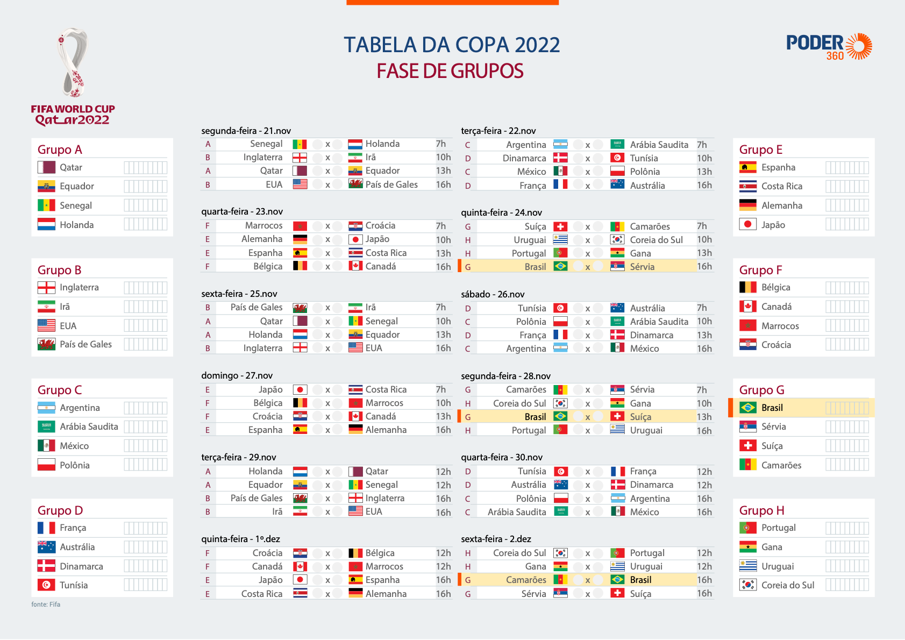

Copa do Mundo FIFA de 2022
A Copa do Mundo FIFA de 2022 ou Campeonato Mundial de Futebol FIFA de 2022 será a vigésima segunda edição deste evento esportivo, um torneio internacional de futebol masculino organizado pela Federação Internacional de Futebol (FIFA), que ocorrerá no Catar. A edição de 2022 será a primeira realizada no Oriente Médio e a última a ter o formato de 32 equipes, já que a competição terá uma mudança no formato e número de equipes na edição de 2026, onde será sediado no Canadá, Estados Unidos e México, passando para 48 equipes. Com sete cidades-sede, o campeonato será disputado entre 20 de novembro e 18 de dezembro, ao invés do período tradicional graça às altas temperaturas que o país sofre no meio do ano; esta é a primeira vez em que uma copa do mundo será disputada no final do ano.
Tabela da Copa do Mundo de 2022
Etadios da Copa do mundo 2022